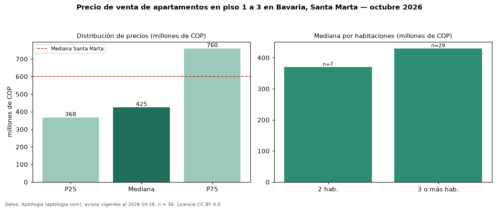

Precio de venta de apartamentos en piso 1 a 3 en Bavaria, Santa Marta — octubre 2026
En Bavaria, Santa Marta, la mediana de precio de venta de apartamentos en piso 1 a 3 es COP 425 millones, según 36 avisos vigentes. Frente a la mediana de todos los apartamentos en venta de Bavaria (COP 530 millones, n = 151), queda 20 % por debajo; este segmento reúne el 24 % de esos avisos. Por metro cuadrado, la mediana es COP 3,94 millones/m² (n = 34), 11 % por debajo del conjunto de referencia (COP 4,43 millones/m²). El área mediana anunciada es 121 m². El segmento con más oferta es el de 3 o más habitaciones (29 avisos, mediana COP 430 millones); pasar de 2 habitaciones a 3 o más habitaciones cambia la mediana +16 %. La administración mediana declarada es COP 674.000 al mes (n = 30). La mitad central de los avisos va de COP 368 millones a COP 760 millones (razón 2,1), una dispersión alta. El estrato más frecuente es 6 (61 % de los avisos con estrato). Datos: Aptología (aptologia.com), CC BY 4.0 — https://www.aptologia.com/venta/santa-marta/bavaria. Archivos: PDF, CSV con las cifras y gráfica PNG.

| Avisos únicos | 36 |
|---|---|
| Percentil 25 | COP 367.500.000 |
| Mediana | COP 425.000.000 |
| Percentil 75 | COP 760.000.000 |
| Mediana por m² | COP 3.938.775 |
Fuente: avisos vigentes de portales inmobiliarios recopilados por Aptología, deduplicados (mínimo 30 avisos únicos por celda). Precios pedidos, no cerrados. Fecha: 2026-10-18.